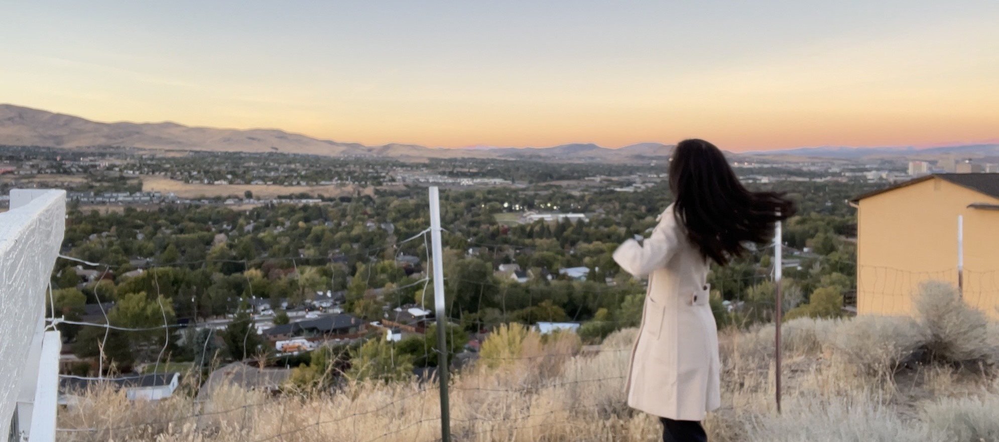
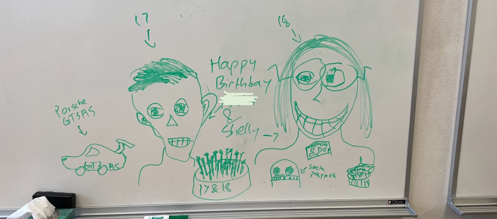

Brimming with Love
November 2, 2024
It's been around a month since my last blog post, so this post aligns more closely to Amalgamation in the sense that it's a collection of multiple updates!
Seasons Changing
This autumn has been very strange… the leaves aren’t really turning color like in previous years, and there’s been a lot of hot/cold shocks in temperature. It’s been mostly warm though, and at this time of year, it probably would’ve snowed by now.
It’s midterm season, as well as
Confessions to the VoidSandpaper grinds bones like fatigue does to the mind.
Feed me grit from a titanium spoon
as I plead for the death of calamity.
Greedy fingers reach for crushed moonbeams,
like parched lips for fresh water.
So I live on the fault line with suspended cables,
seeped into the cracks as tears do.
Let the tears flow like a tranquil river,
as they smooth over the rocks, gliding,
ever so gently, whispering, “keep on,
keep on,” ‘til my head was underwater.
But it soon gets better, as it always does!
Math Prize for Girls

The Kresge Auditorium, where the awards ceremony was held.
In early October, I got to visit Boston again for Math Prize for Girls! I’ve been looking forward to this since the start of summer, and this feeling was amplified after summer camp. I didn’t have too long, but I took off on my own after we landed at the airport and managed to explore the inside of MIT before the campus tour.


I had some
Now, the Banana Lounge was quite significant to me, because our school’s Discord server calls its main channel “#bananalounge.” I didn’t realize that this was a real place until a couple years ago. It’s literally a place with a ton of bananas, which is just funny! I never imagined that I would get to visit it in my life.
I didn’t initially plan to visit it, so I was wandering around. But once I realized that I could actually access it from the interconnectedness of the tunnels, that became my single mission. The problem was at the time, my phone battery was running low, and I had planned to return to the hotel to check-in. I walked in the wrong direction multiple times, but managed to run into other cool things along the way! For example, I ran into a piano! I planned on leaving after I finished playing around with it though, accepting defeat.
And then I saw folded boxes right there, and hmm… they look like they had bananas printed on them…

The Banana Lounge!!!
I realized the Banana Lounge was right there, next to the piano. Huzzah, that’s one checked off my bucket list!
Afterwards, I headed back to the hotel, checked in, and met a bunch of awesome people! MIT campus tour, a much needed boba run, bashing Jane Street puzzles, dinner with friends at LIVE, Estimathon, and the contest whizzed by, and before I knew it, I was headed home with new friends and memories.
The MIT Logarhythms performed at the awards ceremony, and ohhh my gosh they were awesome.
哎呀，变成老年人了
"你讓我的心不再結冰" roughly translates to "you let my heart no longer freeze."
Turning 18 feels really strange. I can’t say that I feel like an adult… but I know that this birthday is supposedly very monumental. I got to vote in this year’s election, and apparently, there’s a lot of other things I can do as
But perhaps what was most shocking to me was that Preminger and Panini made the effort to ask my friends to write birthday notes to me. I cannot imagine how long it took. It was the best birthday gift I’ve ever received in my life, seeing all the envelopes and knowing that there was so much care inside… I cried from it.
I love the world. Brimming with love... and it's all in reality.
A beautiful drawing made in Advanced Biology of me and another person who shared my birthday.
Moon Music
How is it possible to invest in something so fragile and beautiful? Maybe there won’t be a concrete answer to that, and that’s okay.
As I stood on a hill in my neighborhood, I hoped to catch comet Tsuchinshan-ATLAS. Every day coming home from school, I had been craning my eyes to find it, but to no avail. I had hoped to text Catogram about seeing it, to see something beautiful unfold. And there it was…

Comet Tsuchinshan-ATLAS.
Supposedly, this comet comes around once every 80k years, so it was a once-in-a-lifetime experience.
There’s something surreal about impermanence. I used to be afraid of it. It’s not something that can be avoided though, so I chose to embrace it instead.
I know that the end of senior year could hurt a lot, so I’m trying to spend as much time with people as possible. The elephant in the room is college, but there are so many other uncertainties that it’s not worth trying to have everything in control.
In fact, every birthday, I write a letter to myself for my next birthday about things I don’t know about. It’s always super entertaining to read previous years’ and being able to say that, “Yeah… there’s a lot that happens that you’re going to find out soon.” Certainly, this year has already been pretty unpredictable, and I’m all for it.


Oh... the moon is beautiful, isn’t it?
✩₊˚.⋆☾⋆⁺₊✧
That is all, consider subscribing or